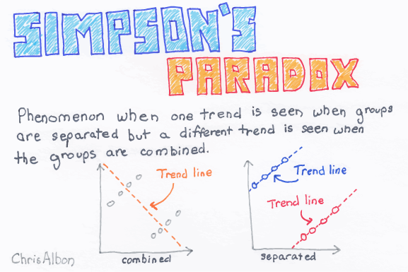

10. Các chỉ số thống kê mô tả cơ bản
Trong quá trình phân tích dữ liệu, việc nắm vững các chỉ số thống kê cơ bản là rất quan trọng. Tuy nhiên, vấn đề còn nằm ở khả năng diễn đạt các chỉ số thống kê thành các ngôn ngữ thân thuộc trong kinh doanh. Các chỉ số thống kê mô tả cho 1 biến có tính thực tiễn cao bao gồm:
Giá trị trung bình
Giá trị trung bình sau khi loại bỏ
outlierNhóm tứ phân vị (
quartile),percentileTrung vị (
median)Giá trị nhỏ nhất, lớn nhất
Độ lệch tiêu chuẩn (
standard deviation) (ít dùng trong kinh doanh thực tiễn)
Bên cạnh đó, khi so sánh giữa 2 biến với nhau, ta cũng cần nắm vững các phương pháp sau:
So sánh 1 biến liên tục với 1 biến rời rạc - Phương pháp phân tích phương sai -
ANOVASo sánh 2 biến liên tục - Đánh giá hệ số tương quan -
correlationSo sánh 2 biến rời rạc - Phương pháp đánh giá chỉ số khi-bình phương -
Chi-Square&prop.testLưu ý với nghịch lý Simpson (
Simpson paradox)
Note
Lưu ý
Đây là chương rất quan trọng và tổng hợp phần lớn các kỹ thuật thống kê thường dùng khi phân tích dữ liệu thực tế. Thành thạo ứng dụng các kỹ thuật này có thể giúp phân tích và tìm kiếm insight nhanh chóng với khoảng 80%-85% các bài toán phân tích ứng dụng thực tế.
10.1. Các chỉ số thống kê cơ bản
Giả sử ta có 1 tập hơn 1000 khách hàng với thu nhập như sau.
import polars as pl
import numpy as np
from lets_plot import *
LetsPlot.setup_html()
# Set random seed
np.random.seed(1)
# Generate income values
random_income = np.floor(np.random.uniform(6, 30, 995)).astype(int)
extra_income = np.array([1000, 2000, 3000, 5000])
income = np.concatenate([random_income, extra_income])
income_series = pl.Series(income)
# Show first few values
print(income_series.head())
shape: (10,)
Series: '' [i32]
[
16
23
6
13
9
8
10
14
15
18
]
# Tổng hợp thống kê
income_series.describe()
| statistic | value |
|---|---|
| str | f64 |
| "count" | 999.0 |
| "null_count" | 0.0 |
| "mean" | 28.444444 |
| "std" | 196.523392 |
| "min" | 6.0 |
| "25%" | 12.0 |
| "50%" | 18.0 |
| "75%" | 24.0 |
| "max" | 5000.0 |
Min: giá trị nhỏ nhất - thu nhập thấp nhất của khách hàng là 6 triệuMax: giá trị lớn nhất - khách hàng có thu nhập cao nhất là 5 tỷFirst quantile: quantile 25%Cách 1: Tứ phân vị thứ nhất là 12 triệu
Cách 2: Có 25% khách hàng có thu nhập nhỏ hơn hoặc bằng 12 triệu hoặc
Cách 3: Có 75% khách hàng có thu nhập lớn hơn hoặc bằng 12 triệu hoặc
Cách 4: Cứ 4 khách hàng thì có 1 khách hàng có thu nhập nhỏ hơn hoặc bằng 12 triệu
Median: giá trị trung vị - quantile 50%Cách 1: Trung vị có giá trị 18 triệu
Cách 2: 50% khách hàng có thu nhập nhỏ hơn hoặc bằng 18 triệu
Cách 3: Có 50% khách hàng có thu nhập lớn hơn hoặc bằng 18 triệu hoặc
Cách 4: Cứ 2 khách hàng thì có 1 khách hàng có thu nhập lớn hơn hoặc bằng 18 triệu
Third quantile: quantile 75% - tứ phân vị thứ 3 - 24 triệuMean: giá trị trung bình - thu nhập trung bình của khách hàng là 5000 triệu
Để trực quan hóa các chỉ số thống kê vừa đề cập, ta có thể sử dụng biểu đồ boxplot. Biểu đồ boxplot thể hiện các thành phần như sau.
Với biểu đồ trên, ta còn thấy có 2 nhóm chỉ số bổ sung nâng cao:
IQR: Inter Quaritle Range - là độ rộng của boxplot, làQ3-Q1
income_series.quantile(0.75) - income_series.quantile(0.25)
12.0
Outlier: Là các quan sát có giá trị quá cao hoặc quá thấp. Về mặt thống kê, các outlier được định nghĩa là các giá trị nằm ngoài khoảng \((\text{Q}_1 - 1.5\times \text{IQR}, \text{Q}_3 + 1.5\times \text{IQR})\)
Bên cạnh đó, do việc xuất hiện các quan sát ngoại lại (outlier) là thường xuyên và có thể gây méo các chỉ số, ta cần quan tâm thêm 2 chỉ số sau
Giá trị trung bình loại bỏ outlier
Các percentile - các mốc phân vị từ 1%-100%
# Mean loại bỏ 5% đầu và 5% cuối
from scipy.stats import trim_mean
import numpy as np
trim_mean(income_series, proportiontocut=0.05)
17.56159822419534
# Xem xét các mốc percentile
[income_series.quantile(i) for i in np.arange(0, 1.01, 0.01)]
[6.0,
6.0,
6.0,
6.0,
6.0,
6.0,
7.0,
7.0,
7.0,
8.0,
8.0,
8.0,
9.0,
9.0,
9.0,
9.0,
9.0,
10.0,
10.0,
10.0,
10.0,
11.0,
11.0,
11.0,
11.0,
12.0,
12.0,
12.0,
12.0,
12.0,
13.0,
13.0,
13.0,
14.0,
14.0,
14.0,
14.0,
15.0,
15.0,
15.0,
15.0,
16.0,
16.0,
16.0,
16.0,
16.0,
17.0,
17.0,
17.0,
17.0,
18.0,
18.0,
18.0,
18.0,
19.0,
19.0,
19.0,
19.0,
19.0,
20.0,
20.0,
20.0,
20.0,
21.0,
21.0,
21.0,
22.0,
22.0,
22.0,
22.0,
22.0,
23.0,
23.0,
23.0,
23.0,
24.0,
24.0,
24.0,
24.0,
25.0,
25.0,
25.0,
25.0,
25.0,
26.0,
26.0,
26.0,
26.0,
27.0,
27.0,
27.0,
27.0,
28.0,
28.0,
28.0,
28.0,
29.0,
29.0,
29.0,
29.0,
5000.0]
10.2. Phân tích mối quan hệ 2 biến liên tục - correlation
Hệ số tương quan
Hệ số tương quan (correlation coefficient) là một chỉ số thống kê, được sử dụng để đo lường mối liên hệ tương quan tuyến tính giữa 2 biến định lượng hay còn gọi là biến liên tục (quantitative/continuous variables). Hay nói một cách dễ hiểu hơn, hệ số tương quan cho ta biết rằng giữa 2 biến liên tục có mối liên hệ tuyến tính nào hay không.
Thể hiện quan hệ tuyến tính giữa hai hay nhiều biến. Có giá trị nằm trong khoảng [-1,1]
Giá trị âm: Quan hệ nghịch biến
Giá trị dương: Quan hệ đồng biến
Độ mạnh yếu của hệ số tương quan được đo lường bằng giá trị tuyệt đối:
Lớn hơn 0.7: Mạnh
Từ 0.3-0.7: Trung bình
Dưới 0.3: Yếu
Tính toán correlation như sau:
import polars as pl
import numpy as np
x = np.random.normal(loc=50, scale=10, size=100)
y = 2.5 * x + np.random.normal(loc=0, scale=20, size=100)
# Create a Polars DataFrame
df = pl.DataFrame({
"x": x,
"y": y
})
# Calculate correlation between columns 'x' and 'y'
correlation = df.select(pl.corr("x", "y")).item()
print("Correlation (Pearson):", correlation)
Correlation (Pearson): 0.7338691687538745
from lets_plot import *
LetsPlot.setup_html()
(
ggplot(df, aes("x", "y"))
+ geom_point(alpha = 0.3, size = 4)
+ geom_smooth(method = "lm", color = "red")
+ labs(title = f"Correlation between x & y: {correlation:.2f}")
)
Warning
Lưu ý
Hệ số tương quan chỉ mô tả mối quan hệ đồng biến hoặc nghịch biến giữa hai biến liên tục mà không phản ánh quan hệ phi tuyến tính giữa 2 biến
Hệ số tương quan không phản ánh được mối quan hệ nhân quả, hai biến có hệ số tương quan cao không có nghĩa là biến này gây ảnh hưởng đến biến kia (correlation vs causiality)
x = np.random.uniform(low = 0, high = 10, size = 100)
y = np.sin(x) + np.random.normal(loc=0, scale=0.1, size=100)
# Create a Polars DataFrame
df = pl.DataFrame({
"x": x,
"y": y
})
# Calculate correlation between columns 'x' and 'y'
correlation = df.select(pl.corr("x", "y")).item()
(
ggplot(df, aes("x", "y"))
+ geom_point(alpha = 0.3, size = 4)
+ geom_smooth(method = "lm", color = "red")
+ labs(title = f"Correlation between x & y: {correlation:.2f}")
)
Correlation vs. Causiality
Hai biến có hệ số tương quan rất cao nhưng hoàn toàn không có quan hệ trong thực tế
10.3. ANOVA
ANOVA viết tắt của từ analysis of variance, tức phân tích phương sai.
Phương pháp ANOVA được sử dụng khi chúng ta muốn so sánh giữa 2 hoặc nhiều nhóm đối tượng khác nhau dựa vào 1 tiêu chí nhất định nào đó, ví dụ như so sánh độ tuổi của nhóm khách hàng thường và khách VIP, hay so sánh thu nhập của nhóm khách hàng nam và khách hàng nữ... Để giải thích một cách dễ hiểu hơn, chúng ta sẽ làm ví dụ sau với tập dữ liệu iris
import seaborn as sns
iris = pl.from_pandas(sns.load_dataset("iris"))
iris.head()
| sepal_length | sepal_width | petal_length | petal_width | species |
|---|---|---|---|---|
| f64 | f64 | f64 | f64 | str |
| 5.1 | 3.5 | 1.4 | 0.2 | "setosa" |
| 4.9 | 3.0 | 1.4 | 0.2 | "setosa" |
| 4.7 | 3.2 | 1.3 | 0.2 | "setosa" |
| 4.6 | 3.1 | 1.5 | 0.2 | "setosa" |
| 5.0 | 3.6 | 1.4 | 0.2 | "setosa" |
Chúng ta sẽ vẽ biểu đồ boxplot so sánh Sepal.Length giữa các loài hoa (Species).
(
ggplot(iris, aes("species", "sepal_length", fill = "species"))
+ geom_boxplot() +
labs(
title = "Overview of Iris Sepal Length by Species",
x = "Species",
y = "Sepal Length (cm)")
)
Kiểm định ANOVA sẽ giúp chung ta so sánh chiều dài đài hoa trung bình giữa các loài hoa, sau đó tính toán chênh lệch chiều dài đài hoa trung bình giữa các loài hoa, và cuối cùng sẽ kiểm định xem những sự chênh lệch đó thực sự có ý nghĩa về mặt thống kê hay không. Hay nói cách khác, phương pháp ANOVA kiểm định cặp giả thuyết sau:
\(H_0\): Không có sự khác biệt giữa chiều dài đài hoa của các loài hoa (tức chênh lệch chiều dài đài hoa trung bình = 0)
\(H_1\): Có sự khác biệt giữa chiều dài đài hoa của các loài hoa (chênh lệch chiều dài đài hoa trung bình khác 0)
import statsmodels.api as sm
from statsmodels.formula.api import ols
from statsmodels.stats.multicomp import pairwise_tukeyhsd
# One-way ANOVA
tukey = pairwise_tukeyhsd(endog=iris['sepal_length'], # dependent variable
groups=iris['species'], # group variable
alpha=0.05) # significance level
# Print result
print(tukey)
Multiple Comparison of Means - Tukey HSD, FWER=0.05
=========================================================
group1 group2 meandiff p-adj lower upper reject
---------------------------------------------------------
setosa versicolor 0.93 0.0 0.6862 1.1738 True
setosa virginica 1.582 0.0 1.3382 1.8258 True
versicolor virginica 0.652 0.0 0.4082 0.8958 True
---------------------------------------------------------
Với kết quả như trên, ta hiểu như sau:
Kết quả trong trường hợp này cho ta thấy thực sự có sự khác biệt giữa chiều dài đài hoa của các loài hoa (các giá trị p-value = 0).
Trung bình đài hòa của nhóm
vesicolorcao hơnsetosalà 0.93 (ước lượng điểm). Hoặc có thể nói đài hoa của nhómvesicolordài hơnsetosatrong khoảng từ 0.686 đến 1.173 (từlwrđếnupr)
Important
Lưu ý
Kỹ thuật phân tích ANOVA là kỹ thuật rất quan trọng và được phần lớn trong các bước phân tích khám phá.
Bên cạnh phân tich ANOVA về giá trị trung bình, cần lưu ý sử dụng giá trị trung bình sau khi loại bỏ outlier để bổ trợ
10.4. Kiểm định quan hệ Chi-bình phương
Một trong những câu hỏi ta thường xuyên phải giải quyết trong quá trình phân tích dữ liệu là tìm kiếm mối quan hệ giữa các biến rời rạc. Một trong những kỹ thuật phổ biến để tìm kiếm mối quan hệ này là sử dụng kiểm định Chi-square (Khi bình phương).
Để thực hiện phân tích mối quan hệ này, ta cần thực hiện ba bước:
Bước một, xây dựng bảng phân phối tần xuất hai chiều.
Bước hai, tính toán chỉ số \(\chi^2\) để kiểm định giả thuyết độc lập giữa hai biến
Bước ba, đưa ra kết luận về mối quan hệ vừa được kiểm định
Để hiểu hơn về kiểm định \(\chi^2\), ta xem xét ví dụ dưới đây.
Ví dụ: Một trang web quảng cáo muốn phân tích về mối quan hệ giữa phương thức quảng cáo và thiết bị sử dụng. Dữ liệu trong một tháng về số lượt người dùng truy cập website được thể hiện như bảng dưới đây (đơn vị nghìn user)
df = pl.DataFrame({
"device_category": ["Desktop", "Tablet", "Phone", "Total"],
"organic_search": [25, 20, 35, 80],
"paid_search": [20, 30, 15, 65],
"email": [35, 25, 10, 80],
"display": [20, 25, 40, 85],
"total": [100, 100, 100, 300]
})
# Show the DataFrame
print(df)
shape: (4, 6)
┌─────────────────┬────────────────┬─────────────┬───────┬─────────┬───────┐
│ device_category ┆ organic_search ┆ paid_search ┆ email ┆ display ┆ total │
│ --- ┆ --- ┆ --- ┆ --- ┆ --- ┆ --- │
│ str ┆ i64 ┆ i64 ┆ i64 ┆ i64 ┆ i64 │
╞═════════════════╪════════════════╪═════════════╪═══════╪═════════╪═══════╡
│ Desktop ┆ 25 ┆ 20 ┆ 35 ┆ 20 ┆ 100 │
│ Tablet ┆ 20 ┆ 30 ┆ 25 ┆ 25 ┆ 100 │
│ Phone ┆ 35 ┆ 15 ┆ 10 ┆ 40 ┆ 100 │
│ Total ┆ 80 ┆ 65 ┆ 80 ┆ 85 ┆ 300 │
└─────────────────┴────────────────┴─────────────┴───────┴─────────┴───────┘
Để phân tích mối quan hệ giữa hai biến, ta có giả thuyết như sau:
\(H_0\): Phương thức quảng cáo và thiết bị sử dụng không có mối liên hệ với nhau (hai biến độc lập)
\(H_1\): Phương thức quảng cáo và thiết bị sử dụng có mối liên hệ với nhau (tồn tại mối quan hệ giữa hai biến)
Chỉ số \(\chi^2\) được tính như sau:
Trong đó:
\(O\) là giá trị quan sát được thực tế (ví dụ: Desktop/Organic Search có 25 ngàn user)
\(E\) là giá trị kỳ vọng của mỗi cặp giá trị.
Ta tính giá trị kỳ vọng như sau:
Tính tổng từng cột và từng dòng (giá trị " Total ")
Nhân từng dòng với từng hàng và chia cho tổng số quan sát
Ví dụ: Giá trị kỳ vọng của Desktop và Organic Search có thể được tính như sau:
Giá trị kỳ vọng của tất cả các giá trị có kết quả như sau
df2 = pl.DataFrame({
"device_category": ["Desktop", "Tablet", "Phone"],
"organic_search": [26.67, 26.67, 26.67],
"paid_search": [21.67, 21.67, 21.67],
"email": [23.33, 23.33, 23.33],
"display": [28.33, 28.33, 28.33]
})
# Show the DataFrame
print(df2)
shape: (3, 5)
┌─────────────────┬────────────────┬─────────────┬───────┬─────────┐
│ device_category ┆ organic_search ┆ paid_search ┆ email ┆ display │
│ --- ┆ --- ┆ --- ┆ --- ┆ --- │
│ str ┆ f64 ┆ f64 ┆ f64 ┆ f64 │
╞═════════════════╪════════════════╪═════════════╪═══════╪═════════╡
│ Desktop ┆ 26.67 ┆ 21.67 ┆ 23.33 ┆ 28.33 │
│ Tablet ┆ 26.67 ┆ 21.67 ┆ 23.33 ┆ 28.33 │
│ Phone ┆ 26.67 ┆ 21.67 ┆ 23.33 ┆ 28.33 │
└─────────────────┴────────────────┴─────────────┴───────┴─────────┘
Tiếp đó, ta tính toán sự khác biệt giữa giá trị kỳ vọng và giá trị thực tế. Sau đó tính \(\chi^2\) như sau:
Tính độ sai lệch
Tính giá trị bình phương
Chia giá trị vừa tính được cho giá trị kỳ vọng:
Tương tự, ta tính được cho tất cả các biến như sau
df3 = pl.DataFrame({"device_category": ["Desktop", "Tablet", "Phone"],
"organic_search": [0.1, 1.67, 2.6],
"paid_search": [0.13, 3.2, 2.05],
"email": [5.83, 0.12, 7.62],
"display": [2.45, 0.39, 4.8]
})
df3
| device_category | organic_search | paid_search | display | |
|---|---|---|---|---|
| str | f64 | f64 | f64 | f64 |
| "Desktop" | 0.1 | 0.13 | 5.83 | 2.45 |
| "Tablet" | 1.67 | 3.2 | 0.12 | 0.39 |
| "Phone" | 2.6 | 2.05 | 7.62 | 4.8 |
\(\chi^2\) thực tế được tính bằng tổng các giá trị trên \(\chi^2 = 30.96\)
Với dữ liệu trên, ta có 4 cột và 3 hàng. Như vậy, bậc tự do trong phân phôi \(\chi^2\) là \((4-1)*(3-1) = 6\). Ta có thể so sánh giá trị vừa tìm được với giá trị \(\chi^2\) tại đây. Với \(\alpha\) bằng .1 và 6 bậc tự do, giá trị của \(\chi\)^2^ là 10.64. Với giá trị thực tế lớn hơn giá trị lý thuyết, ta bác bỏ \(H_0\). Như vậy, về mặt thống kê, tồn tại mối quan hệ giữa phương thức marketing và thiết bị sử dụng.
Ví dụ với Python
Trong thực tế, khi phân tích dữ liệu, ta có thể ra quyết định nhanh chóng về mối quan hệ giữa hai biến rời rạc thông qua p-value.
from scipy.stats import chi2_contingency
df_chisq = (
df.filter(pl.col("device_category") != "Total")
.select(["organic_search", "paid_search", "email", "display"])
)
chi2, p, dof, expected = chi2_contingency(df_chisq)
print(p)
print(expected) # Expected Value
2.5594473044479567e-05
[[26.66666667 21.66666667 23.33333333 28.33333333]
[26.66666667 21.66666667 23.33333333 28.33333333]
[26.66666667 21.66666667 23.33333333 28.33333333]]
Với \(p-value < 0.05\), ta bác bỏ \(H_0\), chấp nhận \(H_1\). Nghĩa là tồn tại mối quan hệ giữa phương thức quảng cáo và thiết bị sử dụng.
10.5. Prop test
Nếu Anova được sử dụng để đánh giá ảnh hưởng của 1 biến rời rạc lên 1 biến liên tục, prop test là một trường hợp đặc biệt của \(\chi^2\) dùng để đánh giá ảnh hưởng của 1 biến rời rạc lên phân bổ của 1 biến khác.
Ví dụ: Thử nghiệm đánh giá khả năng phản hồi của 2 thông điệp quảng cáo đến các nhóm đối tượng tương tự nhau.
Quảng cáo |
Số lượt xem |
Số lượt click |
Tỷ lệ CR |
|---|---|---|---|
A |
1000 |
20 |
2% |
B |
900 |
16 |
1.8% |
Để đánh giá chính xác quảng cáo A có thực sự tốt hơn B hay không, ta có test sau.
from statsmodels.stats.proportion import proportions_ztest
# Two groups: 30/100 and 50/120
nobs = [1000, 900]
count = [20, 16]
stat, pval = proportions_ztest(count, nobs)
print(f"Z statistic: {stat:.2f}")
print(f"P-value: {pval:.4f}")
Z statistic: 0.35
P-value: 0.7228
Trong trường hợp trên, ta không đủ kết luận rằng quảng cáo A tốt hơn quảng cáo B do \(\text{p-value} > 0.05\)
Lưu ý: prop.test chỉ được dùng khi đo lường tỷ lệ chuyển đổi, ảnh hưởng của các biến rời rạc (factor) lên đối tượng (discrete number). Do đó, nếu dùng prop.test để đánh giá trên biến giá trị, đặc biệt sau khi chuyển đổi đơn vị tiền tệ sẽ gây ra các nhận định sai lầm.
VD: Đánh giá về tỷ lệ bảo hiểm tái tục năm 2 nếu khách hàng buộc phải mua bảo hiểm (không phải do tự nguyện), ta có bảng sau
Tiêu chí |
Bắt buộc |
Không bắt buộc |
|---|---|---|
Số lượng hợp đồng (A) |
2000 |
3000 |
Giá trị 1 hợp đồng (B) |
20 (M) |
20 (M) |
Tổng giá trị (C=A*B) |
40 (B) |
60 (B) |
Giá trị huỷ năm 2 (D) |
18 (B) |
22 (B) |
Tỷ lệ huỷ (E= D/C) |
45% |
36.7% |
Bước tiếp theo, ta dùng proportion test để đánh giá hiệu ứng thực sự của việc bắt buộc phải mua bảo hiểm đến tỷ lệ huỷ năm 2.
Nếu dùng giá trị là tỷ đồng, ta có kết quả sau.
huy = [18, 22]
total = [40, 60]
stat, p_value = proportions_ztest(huy, total)
print(f"P-value is: {p_value:.3f}")
P-value is: 0.405
Kết quả cho thấy \(p-value > 0.05\), việc bắt buộc mua bảo hiểm không ảnh hưởng đến tỷ lệ huỷ năm 2!
Đây là kết quả sai lầm do bị đi nhầm vào bản chất. Do mỗi hợp đồng trị giá trung bình 20 triêu VND, kết quả đúng phải như sau.
huy = [900, 1100]
total = [2000, 3000]
stat, p_value = proportions_ztest(huy, total)
print(f"P-value is: {p_value:.3f}")
P-value is: 0.000
Kết quả sau cho thấy việc bắt buộc mua bảo hiểm làm tỷ lệ huỷ năm 2 cao hơn 9% so với năm đầu.
Warning
Lưu ý
Khi dùng proportion test, cần lưu ý đến đơn vị của các chỉ số. Nếu không sẽ rất dễ mắc phải và xảy ra sai lầm khi ra quyết định.
10.6. Simpson paradox
Simpson paradox là hiện tượng xảy ra khi xu hướng/ kết luận tổng thể lại khác biệt so với khi so sánh từ nhóm riêng biệt.

Xem ví dụ sau - Có khảo sát nghiên cứu thị trường về tỷ lệ quan tâm đến uống trà sữa buổi trưa. Kết quả như sau
Nhóm |
Nam |
Tỷ lệ |
Nữ |
Tỷ lệ |
|---|---|---|---|---|
Dưới 30 tuổi |
630/900 |
70% |
80/100 |
80% |
Trên 30 tuổi |
40/100 |
40% |
450/900 |
50% |
Tổng số |
670/1000 |
67% |
530/1000 |
53% |
Khi quan sát riêng lẻ từng phân khúc, ta thấy kết quả như sau:
Với nhóm dưới 30 tuổi - Nữ quan tâm nhiều hơn nam (80% > 70%)
Với nhóm trên 30 tuổi - Nữ quan tâm nhiều hơn nam (50% > 40%)
Kết luận: Nữ quan tâm đến việc uống trà sữa nhiều hơn nam.
Tuy nhiên, khi phân tích tổng thể, kết quả ra ngược lại - nam giới lại quan tâm nhiều hơn nữ giời (67% > 53%). Hiện tượng trên gọi là Simpson paradox.
Important
Lưu ý
Simpson paradox là phương pháp bẻ nhỏ dữ liệu và dùng phương pháp suy diễn - nếu xu hướng là đúng với tất cả tập con, sẽ đúng với tổng thể. Do đó, khi phân tích cần đặc biệt cẩn thận để tránh đi vào ngụy biện